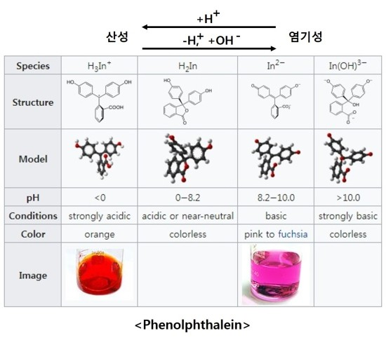

지시약이란?
지시약은 용액의 산성도(pH)에 따라 색이 변하는 물질로, 산과 염기를 구별하는 데 사용됩니다.
지시약은 약산이나 약염기로, 수용액에서 이온화 형태에 따라 서로 다른 색을 나타냅니다.
주요 지시약
리트머스
산성: 빨간색 / 염기성: 파란색
페놀프탈레인
산성: 무색 / 염기성: 분홍색
메틸오렌지
산성: 빨간색 / 염기성: 노란색
브로모티몰블루
산성: 노란색 / 염기성: 파란색
